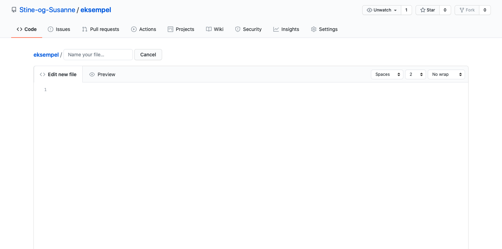
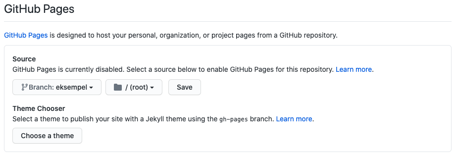

Hvordan lage nettside og bruker på Github
- Gå inn på
www.github.com
og start med lage en ny bruker

- Når du har kommet inn på github må du trykke på plusstegnet oppe i høyre hjørnet og klikker på new repository

- Når du kommer inn på repositoryen gir du den et navn under der det står "repository name"
- Du velger om du vil legge inn en forklaring på hva du skal bruke den til på "description".
- Du må beholde repositoryen public hvis du vil at andre skal se hva du har laget.
- Kryss deretter av alle dei tre boksene, og endre gitignore templaten til jekyll.

- Slik ser siden ut når du har laget et repository
- For å lage nettsiden trykker du på "add file"
- Deretter trykker du på "create new file"
- Da kommer du til en ny side

- Her på denne nye siden kan du programmere nettsiden din
- Først kaller du filen "index.html" for at det skal være hovednettsiden
- I det blanke området kan legge inn koden til nettsiden
- Når du er ferdig blar du ned og trykker på "commit new file"

- Finne linken til nettsiden
- Først starter du med å trykke på options og bla nedover til du finner stedet hvor det står github pages.
- Her endrer du branchen til den branchen du skal bruke
- Til slutt trykker du på "save" og URLen til nettsiden vil dukke opp

Og slik er det man lager en nettside!